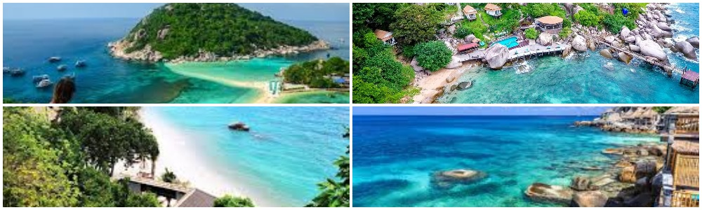

Koh Tao – meaning ‘Turtle Island’ – lives up to its name, being the scuba diving destination of choice in Thailand. The perfect white-sand beaches which ring the hilly 21 km² island are surrounded by the crystal-clear waters of the Gulf of Thailand. The vibrant coral reefs there are home to a wide range of exciting and colourful sea creatures, including turtles, naturally. The compact island is 55 km to the north of Koh Samui and was only really ‘discovered’ in the early 1980s, but now supports a varied selection of hotels, from budget guesthouses and beach bungalows all the way up to five-star luxury resorts. The choice of restaurants and nightlife establishments has also been constantly growing, to the point that there is now something for almost every taste. So far from civilisation while still being relatively easily reached, it is the idyllic tropical island paradise.
